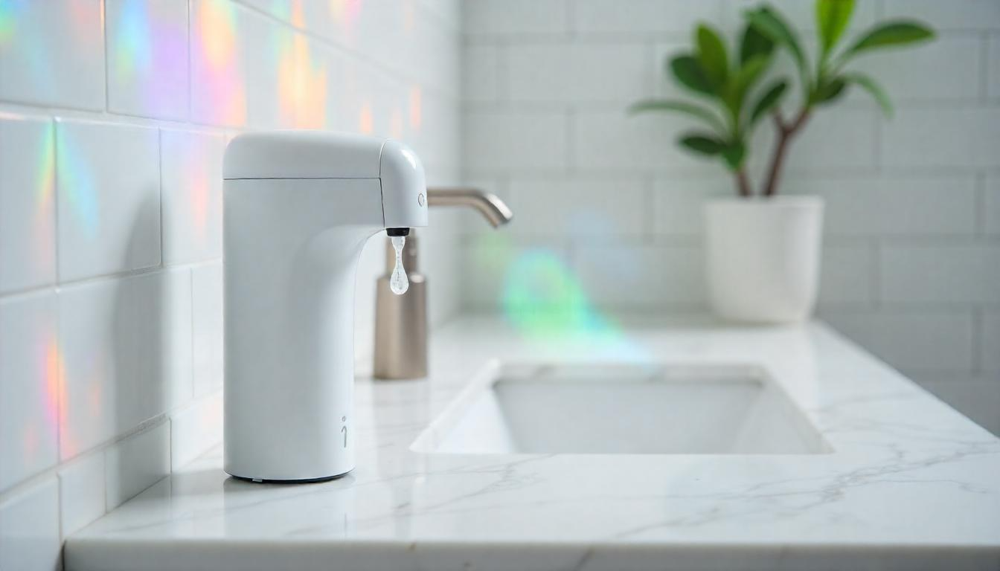

STOP-RUS!
- Siapkan alat dan bahan
- Pasang kabel jumper pada IR sensor dan micro servo (sesuaikan merah untuk power, coklat untuk GND, dan kuning untuk PinDigital)
- Siapkan komponen IR, masukkan kabel power (merah) pada pin 5v di Arduino, kabel coklat dimasukkan pada pin GND di Arduino, dan kabel kuning masukkan pada pin digital (bebas, namun saya menggunakan pin nomor 2)
- Siapkan komponen micro servo, seperti tadi. Masukkan kabel power (merah) pada pin 3,7v di Arduino, kabel coklat dimasukkan pada pin GND kedua di Arduino, dan kabel kuning masukkan pada pin digital (bebas, namun disini saya menggunakan pin nomor 8 untuk micro servonya)
- Setelah terpasang dengan benar semuanya, colokkan USB
Apa sih itu STOP-RUS?
STOP-RUS! adalah inovasi sanitasi terbaru yang dirancang untuk memberikan perlindungan ekstra terhadap penyebaran virus dan kuman. Menggunakan teknologi sensor otomatis, Stop-rush memastikan setiap pengguna dapat membersihkan tangan secara higienis tanpa perlu menyentuh alat secara langsung, mengurangi risiko kontaminasi silang. Dengan bentuk yang praktis dan mudah digunakan, Stoprush dapat dipasang di berbagai tempat, seperti pintu masuk gedung, ruang publik, atau area kerja. Alat ini bekerja dengan mendeteksi gerakan tangan dan secara otomatis mengeluarkan cairan disinfektan dalam jumlah yang tepat. Hal ini menjamin setiap pengguna memperoleh perlindungan maksimal, tanpa perlu khawatir tentang penggunaan cairan yang berlebihan atau kurang.Alat dan bahan yang dibutuhan
| Alat | Bahan |
|---|---|
| PC atau Laptop | Arduino UNO R3 (1 unit) |
| Aplikasi Arduino-Ide pada PC/Laptop | Infra-red (IR) Sensor (1 unit) |
| Kabel USB | Micro servo (1 unit) |
| Double tape tebal | Kabel jumper male to female (6 pcs) |
| Lem tembak | Kawat |